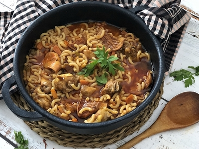

My Favorite Recipes
Welcome to the kitchen, your go-to place for simple and mouthwatering dishes! I've curated some of my favorite recipes that are perfect for beginners and experienced cooks alike. Each recipe comes with clear instructions and tips to help you create amazing meals at home!
Browse my collection below and start cooking something delicious today!
Featured Recipes

Fideus a la Cassola
A traditional Catalan dish of noodles cooked with pork and a flavorful sofregit base.
View RecipeFood Calculator
Calculate ingredients, portions, and more with my handy food calculator.
Open Calculator